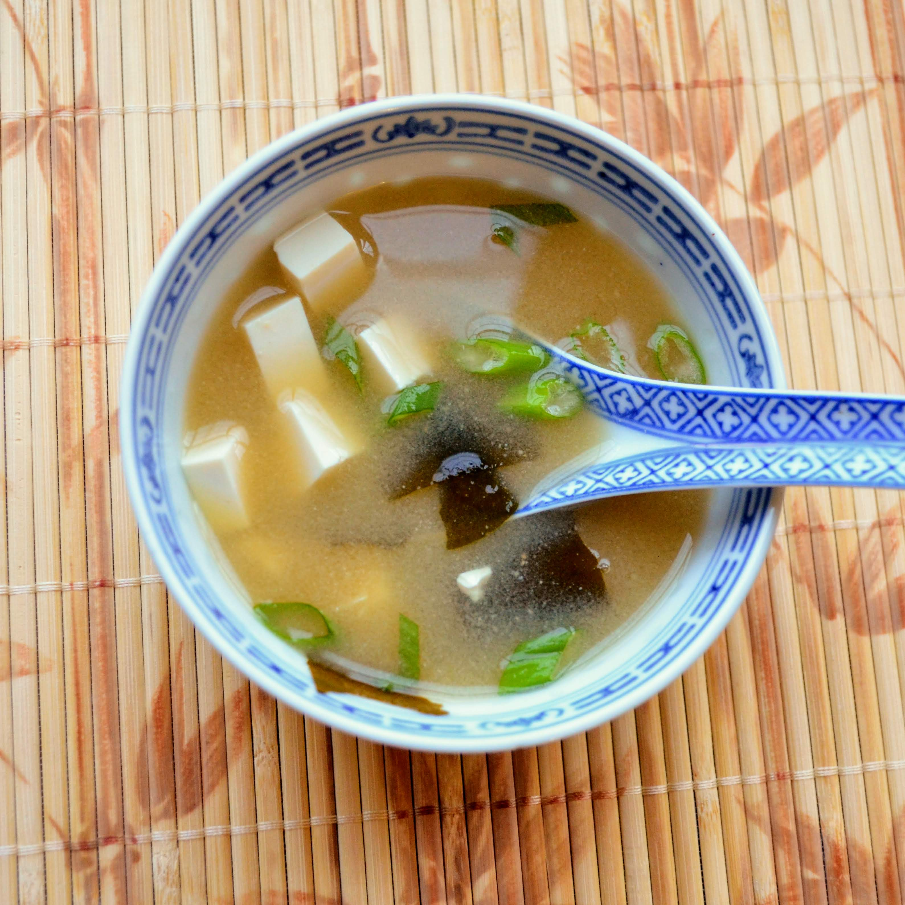

Miso Soup

Description
Easy recipe for making your very own Japanese miso soup from scratch.
Perfect for an appetizer or light, warming lunch.
Ingredients
- 1 tablespoon finely chopped wakame
- 4 cups water
- 2 teaspoons dashi granules
- 3 tablespoons miso paste
- 4 ounces silken tofu, cubed
- 2 green onions, sliced on the bias
Steps
- Place wakame in a fine-mesh sieve and soak in some cold water for 10 minutes.
- Combine 4 cups water and dashi granules in a saucepan and bring to a boil over medium heat.
- Add miso paste and whisk to dissolve. Add wakame and simmer for 3 minutes.
- Divide tofu between 4 serving bowls. Ladle miso soup on top and garnish with green onions.